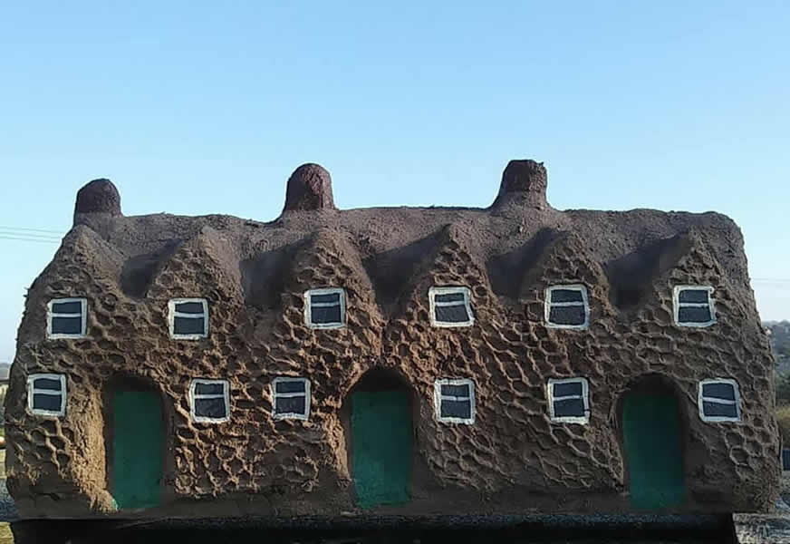
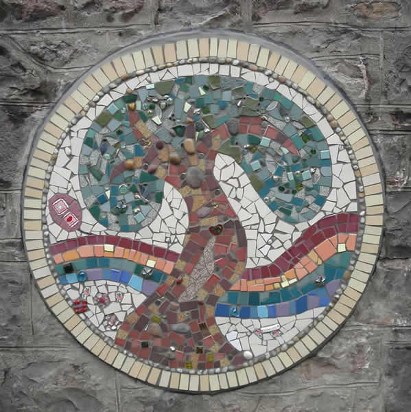

“I’ve just seen the mosaic. It is superb! So beautiful and tastefully done! Thank you so much.”
Location - Ysgol Ffairfach, Llandeilo
Funder – Breathing Places by The National Lottery
Partner – Gardd Y Plant Kindergarden
Cob Buildings

The children made cob sculptures of the historic buildings around Haverfordwest. Cob is a fun and sticky mixture of sub-soil, sand, straw and water and is also a traditional building material.
“The buildings look truly amazing- what a fantastic way to learn about buildings and building materials. We will definitely be in touch when we get more funding.”
Where – Waldo Williams Primary School, Haverfordwest
Funder – Tywi Centre
Memorial Mosaic

A mosaic remembering Willow Rose Rainbow, created with her friends. The children chose highly textural mosaic pieces for this artwork.
More images to follow shortly
Location – Craig-Y-Parc School for disabled children and those with profound and multiple learning difficulties, Cardiff.
Funder – Willow's family and in kind from Dani Lee Arts


{kind=link}
{kind=link}
{kind=link}
{kind=link}
{kind=link}
{kind=link}